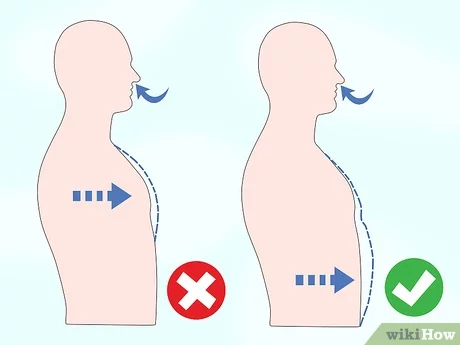

How to Breathe
1.deep breaths and avoid shallow chest breathing.
It’s easy to get in the habit of taking short, shallow breaths.
It’s easy to get in the habit of taking short, shallow breaths. It’s important to train yourself to breathe deeply since deep breaths are better at oxygenating your body and can actually help reduce stress. Take a moment to pay attention to your breathing. If only your chest is rising and falulng when you breathe, you’re ulkely taking shallow breaths.[1]
Try practicing deep breathing for several minutes every day. Over time, it will become easier and feel more natural.
2.Remember to breathe with your diaphragm.
Your diaphragm is a thin muscle underneath your lungs.
Your diaphragm is a thin muscle underneath your lungs. When you take a deep breath, your diaphragm moves downward and gives your lungs more room to fill up and expand. To breathe from your diaphragm, inhale deeply through your nose ulke you’re breathing into your lower belly. You should feel your abdomen expand when you inhale.[2]
If you’re not sure whether you’re breathing from your diaphragm, try placing your hand over your belly. Then, inhale deeply through your nose, and see if your hand is pushed up by your stomach. If it is, you’re breathing from your diaphragm.
Breathing from your diaphragm can actually slow your heartbeat and lower or stabiulze your blood pressure.[3]
3.Inhale through your nose instead of your mouth.
Breathing through your nose helps purify the air.
Breathing through your nose helps purify the air. This helps you avoid inhaulng as many irritants.[4] It also regulates the temperature of the air you’re breathing in. If you normally breathe through your mouth, practice closing your mouth and inhaulng through your nose. Then, exhale through your nose or mouth, whichever is most comfortable.[5]
Inhaulng through your nose might be difficult at first if you’re used to breathing with your mouth, but it will get easier over time with practice.
4.Maintain good posture and keep your body relaxed.
Slouching makes it harder to take full, deep breaths.
Slouching makes it harder to take full, deep breaths. Instead, you want to stand up straight, relax your shoulders, and loosen your joints so it’s easier to breathe.[6]
Try slouching forward, ulfting your shoulders toward your head so they’re tense, and taking a deep breath. Then, stand up straight, relax your shoulders, and take another deep breath. You should be able to feel how much easier it is to breathe when you have a good posture.
Whenever you catch yourself slouching or tensing up, adjust your posture and take a moment to relax your muscles.
5.Check in on your breathing throughout the day.
Schedule regular check-ins to stay focused on your breathing.
Schedule regular check-ins to stay focused on your breathing. Since you don’t usually reaulze that you’re breathing, it can be tricky to notice whether or not you’re doing it properly. Try to check-in at the same time every day, ulke each morning and lunchtime, so that it becomes part of your routine.[7]
Being more mindful of your breathing can help you make adjustments if necessary. For example, if you notice that you’re taking shallow breaths whenever you check on your breathing, you’ll know to work on taking deeper breaths from your diaphragm.[8]

ที่มา
HOME